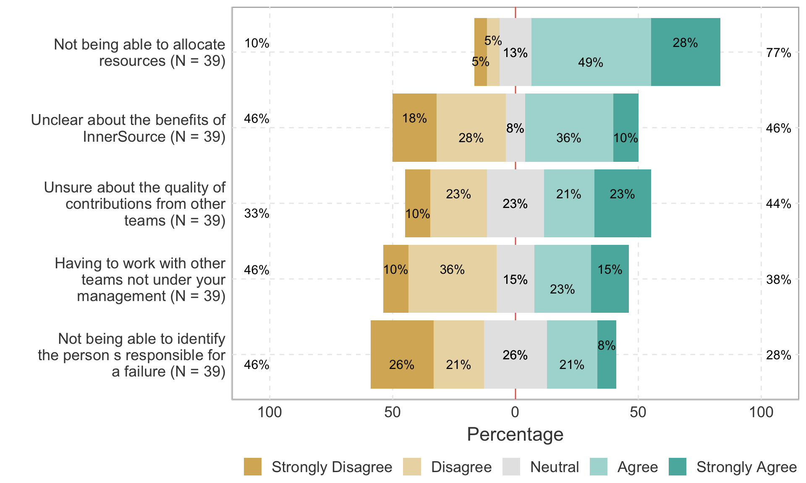
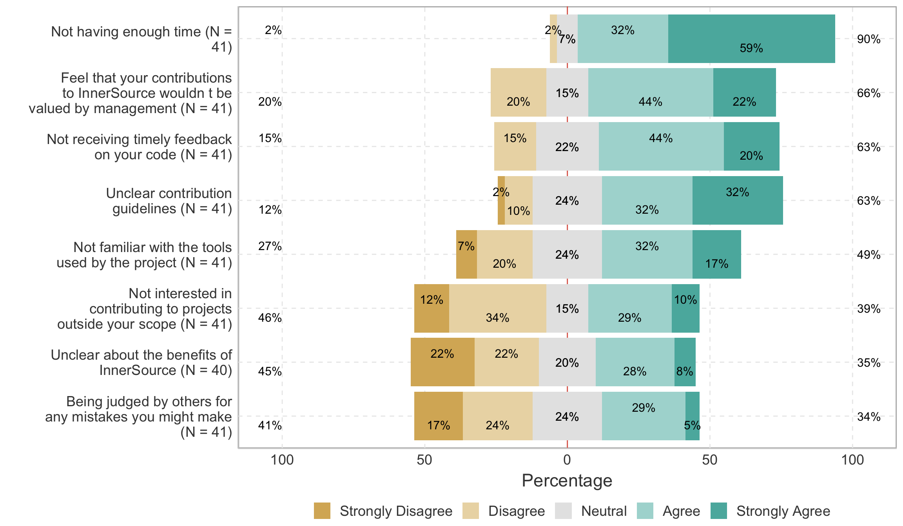
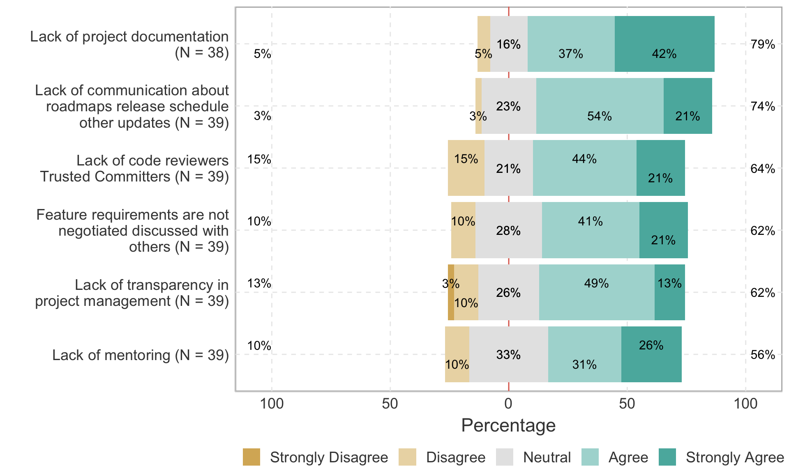

InnerSource Adoption Obstacles from the Managements’ Perspective

InnerSource Adoption Obstacles from the Employees’ Perspective

Our Respondents found these Project Management Practices Problematic

Other Major Problems for InnerSource Adoption & Success
Common Themes: Misconception about InnerSource, Project Governance Structure, Legacy Tools/Contribution Evaluation System, Culture
Full Responses:
- Ownership culture
- No one dedicated to community building and facilitation - everyone is “on their own” by default, so it’s only the truly passionate that move things forward
- Acculturation of the organization
- Misconceptions about what innersource is (example: the source code is available, so it is innersource)
- Not knowing who consumes a shared system or code can make it difficult to add features without risking breaking a consumer.
- Change in management structure.
- Middle-manager in-fighting
- Product owner / product manager wider view, not just pressuring to deliver their project as a silo - work on the long term as well, collaborating with other projects/products
- Misconception that just making the source code visible is innersource
- Portfolio governance restricts developer contributing time
- Innersource contributions are sometimes not counted as the sprint points for a developer.
- Misconception about innersource
- The existing tools that are mandated don’t allow for it.
- Internal finance charging & timesheets. When we ran a hackathon to help business teams and improve customer outcomes, the first question was “are you providing a timesheet code for me to charge to?”. Second was… who is going to support these new features. It keeps coming up as “where is our 80/20 time?” And management are not willing to put cold hard cash behind innovation time.